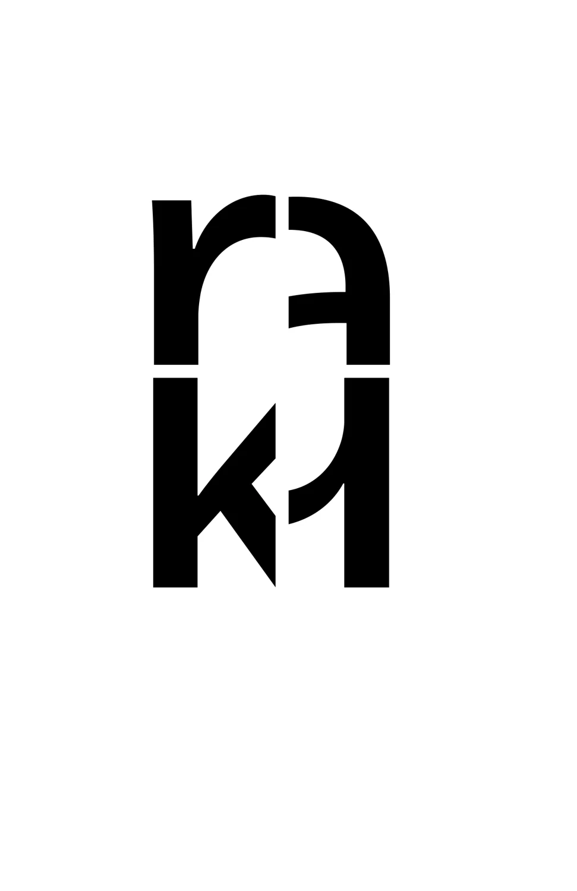
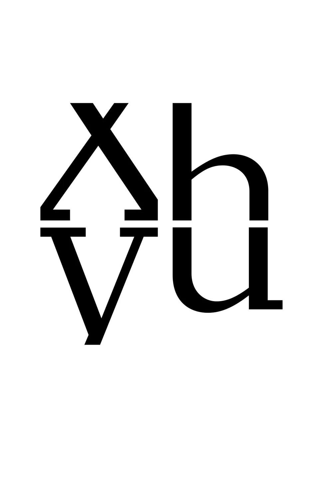
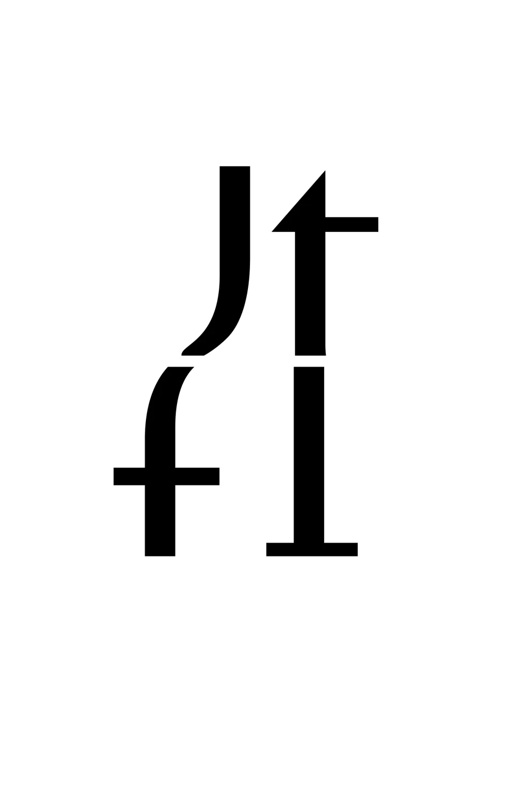
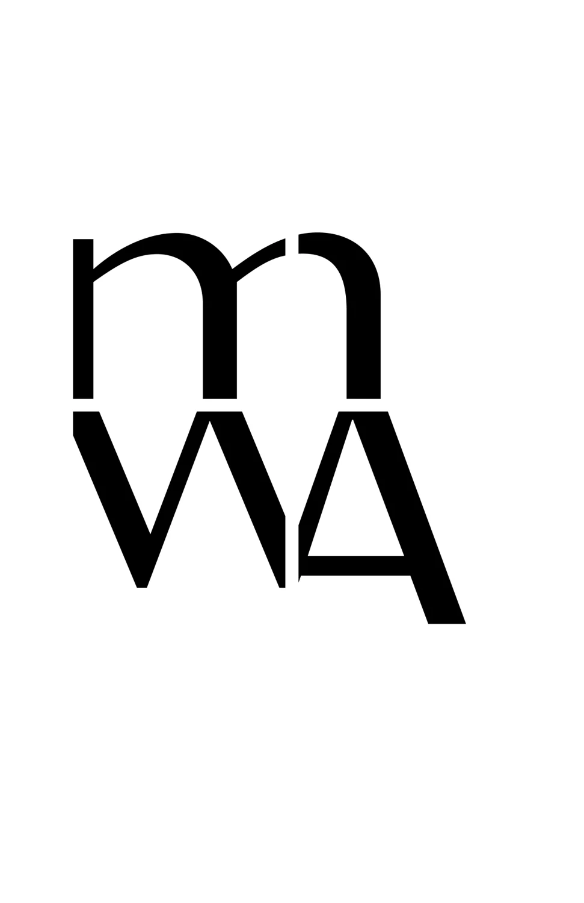
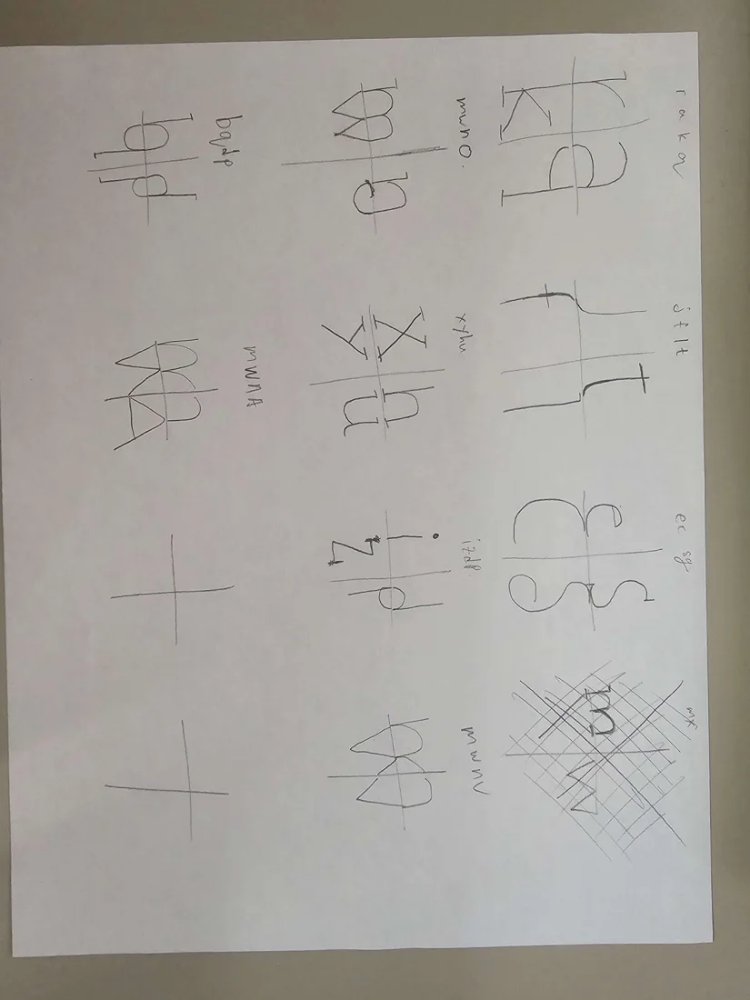
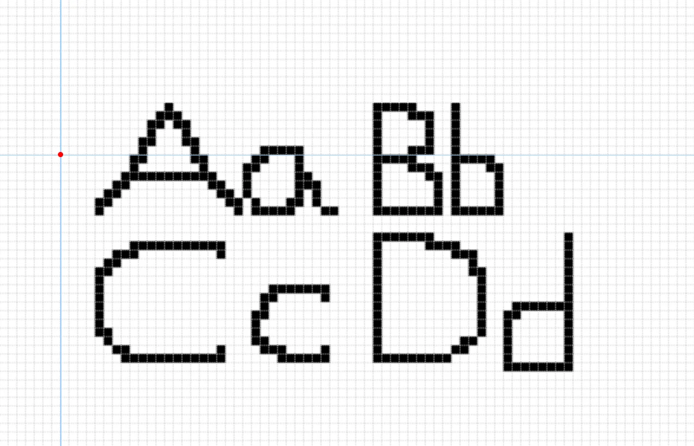

DES 115 · TYPOGRAPHY · COURSEWORK
Experimental Letterforms
A study of letterform relationships, contrast and typographic composition through four monochrome variations.

01 / FORM
Letters as visual material
The submitted Project 1 PDF shows four black-and-white compositions that crop, combine, and rearrange letter shapes into new visual relationships.
02 / PROCESS
Sketch and iterate
The archive includes an idea-sketch image as well as a separate FontStruct exercise. Both document experimentation with typographic form rather than a finished commercial typeface.





PROJECT MATERIALS